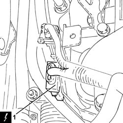
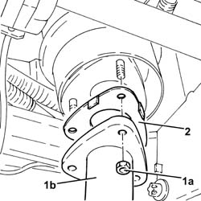
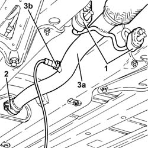
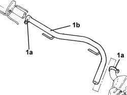
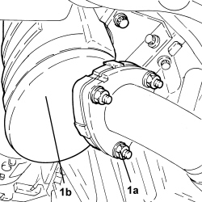
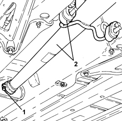

1076B18 RIGID SECTION OF EXHAUST PIPE BETWEEN CATALYTIC CONVERTER AND SILENCER - R + R
- Path
- Procedures > 10 ENGINE > 1076 EXHAUST PIPES AND SILENCERS > 1076B EXHAUST PIPES AND SILENCERS > 1076B18 RIGID SECTION OF EXHAUST PIPE BETWEEN CATALYTIC CONVERTER AND SILENCER - R + R
- Kind
- repair procedure (removal / refitting; the operation number is the code)
- Applies to
- engines: 1.8, 2.2, 1.9 JTD 8v, 1.9 JTD 16v; all production periods
- Interactive page
- https://sloeber94.github.io/elrnDB-fCrm/en/#/194000363
Applies to: engines: 2.2; all production periods
 Removing
Removing
 Refitting
Refitting- Position the vehicle on a lift.
- Make sure that the ignition key is in the OFF position, then disconnect the battery terminal (-).
Description | Connector | |
|---|---|---|
- | Battery |
1. Disconnect the electrical connection for the rear Lambda sensor to the catalytic converter.
Description | Connector | |
|---|---|---|
1 | Lambda sensor on catalyzer - 2 |

Applies to: engines: 2.2; all production periods
- Release the electrical cable for the rear Lambda sensor to the catalytic converter from the fastenings.
1. Undo the nuts (1a) and disconnect the rigid pipe for the exhaust pipe between the catalytic converter and the silencer (1b), catalytic converter side.
2. Remove the gasket.

Applies to: engines: 2.2; all production periods
1. Release the rigid pipe for the exhaust pipe between the catalytic converter and the silencer from the flexible mountings.
2. Loosen the collar fixing the rigid pipe for the exhaust pipe between the catalytic converter and the silencer, front exhaust silencer side.
3. Remove the rigid pipe for the exhaust pipe between the catalytic converter and the silencer (3a) complete with rear Lambda sensor on the catalytic converter (3b).

Applies to: engines: 2.2; all production periods
Refitting
Removing- Place the rigid pipe for the exhaust pipe between the catalytic converter and the silencer complete with rear Lambda sensor back in its housing.
- Tighten the collar fixing the rigid pipe for the exhaust pipe between the catalytic converter and the silencer, front exhaust silencer side.
- Fasten the rigid pipe for the exhaust pipe between the catalytic converter and the silencer to the flexible mountings.
- Place a new gasket back in position.
- Connect the rigid pipe for the exhaust pipe between the catalytic converter and the silencer, catalytic converter side and tighten the new nuts to the recommended torque.
Component | Fastening | dia | Value (daNm) | Validity |
|---|---|---|---|---|
Rigid pipe for exhaust pipe between catalytic converter and silencer | Nut (to replace) | M8 | (exhaust manifold with catalytic converter side) 1.6 | 2.2 |
- Fasten the electrical cable for the rear Lambda sensor to the catalytic converter using the fastenings.
- Connect the electrical connection for the rear Lambda sensor to the catalytic converter.
- Connect the negative battery terminal.
- Remove the vehicle from the lift.
Applies to: engines: 1.9 JTD 8v, 1.9 JTD 16v; all production periods
Removing
Refitting- Position the vehicle on a lift.
Op. 7055B54 UNDER ENGINE PROTECTION/GUARD - R.R.
Op. 1076B12 EXHAUST PIPE ASSEMBLY R R
1. Working at the bench, loosen the collar (1a) and remove the rigid pipe for the exhaust pipe between the catalytic converter and the silencer (1b).

Applies to: engines: 1.9 JTD 8v, 1.9 JTD 16v; all production periods
Refitting
Removing- Refit the exhaust pipe between the catalytic converter and the silencer and secure with collars.
Op. 1076B12 EXHAUST PIPE ASSEMBLY R R
Op. 7055B54 UNDER ENGINE PROTECTION/GUARD - R.R.
- Remove the vehicle from the lift.
Applies to: engines: 1.8; all production periods
Removing
RefittingOp. 1080B95 REAR LAMBDA SENSOR TO CATALYTIC CONVERTER - R.R
1. Undo the nuts (1a) securing the catalyzer (1b) to the flange for the front section of the exhaust.

Applies to: engines: 1.8; all production periods
1. Loosen the collar fixing the rigid pipe for the exhaust pipe between the catalytic converter and the silencer, front exhaust silencer side.
2. Remove the rigid pipe for the exhaust pipe between the catalytic converter and the silencer from the flexible mountings.

Applies to: engines: 1.8; all production periods
Refitting
Removing- Place the rigid pipe of the exhaust pipe between the catalytic converter and the silencer back in its housing and secure it using the flexible mountings.
- Tighten the collar fixing the rigid pipe for the exhaust pipe between the catalytic converter and the silencer, front exhaust silencer side.
- Tighten the nuts securing the catalyzer to the flange for the front section of the exhaust to the recommended torque.
Component | Fastening | dia | Value (daNm) | Validity |
|---|---|---|---|---|
Flange side catalyzzer for front section of exhaust | Nut | M8 | 2.2 ÷ 2.7 | 1.8 |
Topics linked from this page (5)
- 1076B12 EXHAUST PIPE ASSEMBLY R R
- 1080B95 REAR LAMBDA SENSOR TO CATALYTIC CONVERTER - R.R
- 7055B54 UNDER ENGINE PROTECTION/GUARD - R.R.
- A001 BATTERY
- K018 LAMBDA SENSOR ON CATALYZER - 2
Topics that link to this page (15)
- 1004B10 POWER UNIT WITH MANUAL GEARBOX - R.R
- 1004B14 POWER UNIT WITH AUTOMATIC TRANSMISSION R + R
- 1020A20 CRANKCASE OIL SUMP - R.R CLEAN SURFACES FOR SEALANT APPLICATION
- 1020D10 FRONT CRANKSHAFT OIL SEAL COVER - R + R AND REPLACE SEALS WITH TIMING BELT REMOVED
- 1020D26 FLYWHEEL SIDE OIL SEAL COVER - R.R AND REPLACE GASKETS
- 1020D38 FLYWHEEL SIDE OIL SEAL - REPLACE
- 1024B10 ENGINE FLYWHEEL - R + R FOR VERSIONS WITH MANUAL GEARBOX
- 1028H20 PISTON WITH CONNECTING ROD - R.R
- 1076B10 EXHAUST PIPE ASSEMBLY - R + R
- 1084A40 ENGINE OIL LEVEL SENSOR - R + R
- 1084B26 ENGINE OIL INTAKE DUCT - R.R
- 1810A20 CLUTCH - R + R
- 1820B30 CLUTCH HYDRAULIC ACTUATOR - R.R.
- 2110A10 MANUAL GEARBOX AND DIFFERENTIAL - R + R
- 4410D10 FRONT SUSPENSION FRAME - R+R